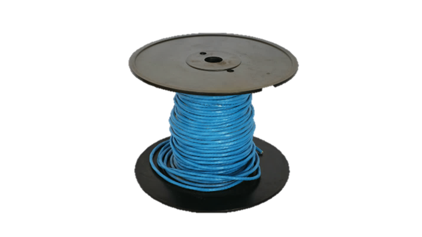
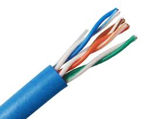
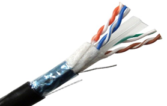
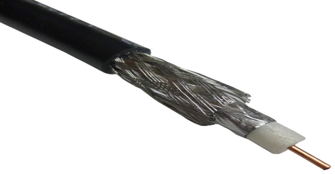
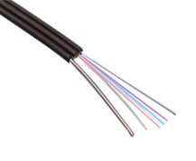
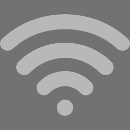
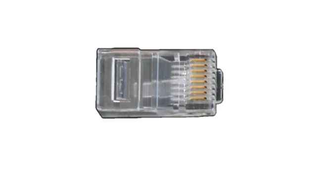
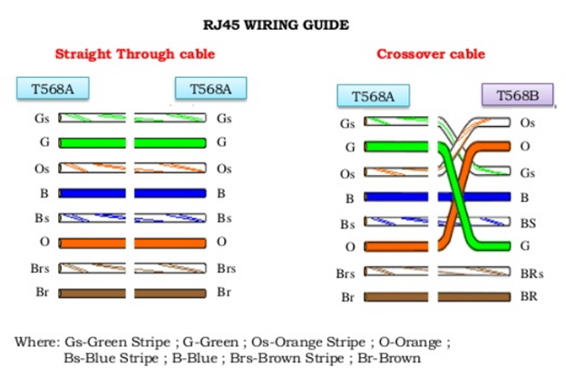
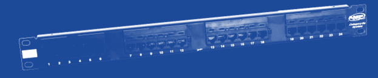
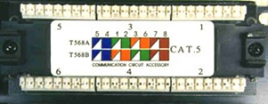

Cable is the medium through which information usually moves from one network device to another.
There are several types of cables which are commonly used with LANs. In some cases, a network will utilize only one type of cable, while other networks will use a variety of cable types.
The type of cable chosen for a network is related to the network's topology, protocol, and size.
Understanding the characteristics of different types of cable and how they relate to other aspects of a network is necessary for the development of a successful network.
Network Media
The network can be connected through two types of connections: wired and wireless.
Having a wired connection is more reliable than a wireless connection. However, wireless connections are widely used by some devices such as cellphones and laptops for their portability.

The following are different wired connections commonly used in networking. However, for this Qualification, we are focusing on UTP and STP Cables which are most common for Local Area Networks.
Unshielded Twisted Pair (UTP) Cable
A popular type of cable that is commonly used for Local Area Networks. It has two shielded wires twisted around each other.

Shielded Twisted Pair (STP) Cable
The extra covering of the STP Cable provides extra protection to prevent electromagnetic interference.

Coaxial Cable
This the cable commonly used in television industries. The metal shield surrounding the cable helps block interference from fluorescence lights, motors, and other computers.

Fiber Optic Cable
Transmits light rather than electronic signals which reduce the risks of electrical interference. It is ideal for environments where electrical interference is present.
Coaxial Cable
This the cable commonly used in television industries. The metal shield surrounding the cable helps block interference from fluorescence lights, motors, and other computers.

Wireless Connections

Wireless connections make use of LANs which allow high frequency radio signals to communicate between workstations, servers, or hubs.
Wireless networks are ideal for allowing laptops, portable devices, and other devices to connect to the LAN. This is also beneficial in establishments where it may be harder to install cables.
Wireless Networking
A wireless network is any type of computer network that use wireless data connections for connecting network nodes.
Wireless PAN
Stands for Wireless Personal Area Networks (WPANs). This connection interconnect devices within a small area. An example would be bluetooth and infrared.
Wireless LAN
Known as WLANs. This is used to connect to local resources and the internet. It links two or more devices over a short distance using a wireless distribution method - usually through an wireless router/wireless access point for internet access. Wi-Fi falls under WLANs.
Wireless Mesh Networks
This is a wireless network made up of radio nodes organized in a mesh topology. It can be a
(1) Wireless MAN or Wireless Metropolitan Area Network which connects several WLANs.
(2) Wireless WAN or Wireless Wide Area Network which covers large areas such as cities/towns, branch offices, business, public internet access system, etc.
(3) Global Area Network (GAN) for used for mobile technology such as texting, calling, etc.
(4) Space Network which is used between spacecrafts within the vicinity of earth. NASA's Space Network makes use of this technology.
Cable Installation
In network installation, we have to be familiar with the RJ45 (Registered Jack).

It is a jack used for Ethernet networking and used for cables. Both T568A and T568B are common wiring standards however the T568B is widely used in the Philippines.
There are two common network cabling namely the straight-through and the crossover cables.
A straight-through cable is also known as the patch cable or Ethernet cable. This is the most common format for network cables. The wires have same pins from either end. This is used when connecting a computer to a modem, router, or switch. This is also used between networking equipment that are not similar to each other.
A crossover cable crosses the wires from the other end differently to the other. We use these when we connect two devices of the same type like two computers or two similar networking devices. These wirings use two different ends, T568A and T568B.
However, if we use a device between two devices (such as a switch), all cables are straight through.

VIDEO: Creating Network Cables
Watch the video below to learn how to create straight-through and crossover cables.
Patch Panels
A patch panel, also known as patch bay, patch field, or jack field, is used to connect and route circuits for monitoring, interconnecting, and testing circuits in a convenient and flexible matter.
Having an organized patch panel is important in the workplace. Although the patch panel is meant for organization, it is still essential to minimize hazards such as hanging and open network cables.

Good patch panel cable management is important. Neat patch, for example, is one of the most common patch panel cable management systems.
It allows users to store patch panels in a neat and tidy compartment. It is also compliant with industry standards.
Patch Panel to Modular Box
In connecting a patch panel to a modular box, it is important to take note that the UTP cable at this time is neither a straight-through or crossover.
We will be installing both ends on a patch panel and a modular box.
(A) Patch Panel
> First, strip the outer covering of the cable
> Then, arrange the wires according to its proper color coding based on the color coding you have done on the RJ45.

A – white blue / blue / white green / green / white orange / orange / white brown / brown
B – white blue / blue / white orange / orange / white green / green / white brown / brown
(B) Modular Box
> Strip the outer covering of the cable
> Arrange the wires according to its proper color coding based on the color coding you have done on the RJ45. Connect the cables ust like the numbers arranged at the figure below.